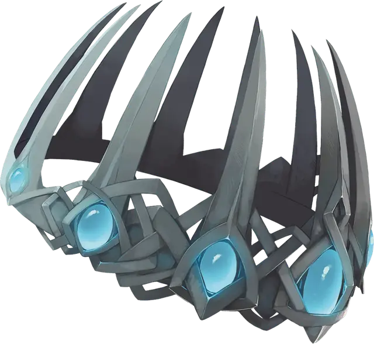

Корона лжи
Crown of Lies
Чудесный предмет, артефакт (требуется настройка)

Предав и едва не уничтожив лича Векну, воин Кас оказался заперт в Царстве теней. Заключенный в Домен ужаса под названием Товаг, он изнывал в облике вампира, пока Тёмные силы Царства теней не заманили Каса в сокрытую кузницу, где он обнаружил корону лжи. Кас поклялся отдать Векну прямо им в руки, после чего надел артефакт и был отпущен. Он намеревается уничтожить своего бывшего господина. Если Кас потерпит неудачу, то Тёмные силы вернут его обратно.
Корона выполнена из отполированных и переплетенных металлических прутьев. Чтобы настроиться на неё, нужно поместить её на голову и произнести истинное желание своего сердца. Вы узнаете, как настроиться на корону, когда прикоснётесь к ней.
Случайные свойства. Корона лжи обладает несколькими свойствами, определяемыми случайным образом:
- 1 малое положительное свойство
- 1 основное положительное свойство
- 1 малое отрицательное свойство
Совершенная маскировка. Пока настроены на корону, вы можете действием превратиться в любое существо, которое вы видели хотя бы раз и чей размер не более чем на одну категорию меньше или больше вашего.
Новый облик в точности повторяет внешность выбранного существа, включая голос. Ваши размеры и скорость заменяются на его. В остальном вы сохраняете свою игровую статистику. Пока вы находитесь в новом облике, корона сливается с вашей личиной и не поддается обнаружению.
Ваш новый облик существует до тех пор, пока вы не умрёте, не закончите настройку на корону или не используете действие, чтобы превратиться в иное существо или вернуться в свой истинный облик. Взаимодействие с вами, пока вы преображены короной, не раскрывает магию иллюзий и не показывает ничего, кроме подробностей о существе, которое вы копируете. Вы считаетесь выбранным существом для целей заклинаний, ловушек и других защит, которые не были бы направлены против него.
Когда вы находитесь в новом облике, любая ваша ложь всегда кажется правдой, независимо от того, какие магические или немагические методы используются для её обнаружения. Вы получаете заклинания послание [sending], адресованные вам и существу, которое вы копируете. Заклинание наблюдение [scrying] и другие подобная магия, направленные на копируемое существо, будет выбирать целью вас. Единственный способ раскрыть ваш истинный облик, пока вы преображены короной — накладывание заклинания исполнение желаний [wish].
Нося корону в своём истинном облике, вы можете выбрать, чтобы корона была видна, если пожелаете.
Уничтожение короны. Если существо, носящее корону, будет убито существом, которое оно копирует, то корона распадётся и будет уничтожена.